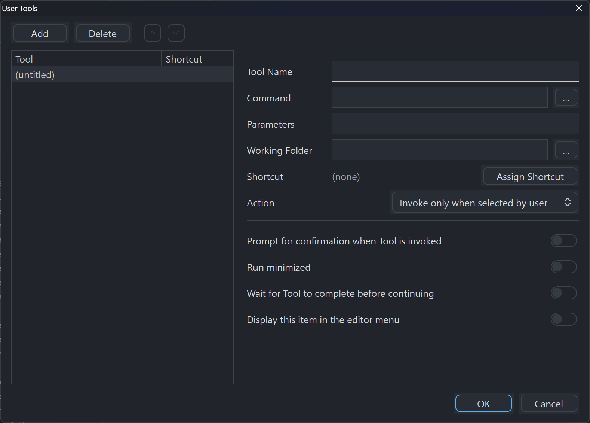

User tools
Defining external programs you can launch from the menu or a shortcut, with parameters substituted from the current file or project.
A user tool is an external program you can run from inside Tiko — a formatter, a version-control command, a packaging script, a documentation generator. Tools appear on File›User Tools and can have their own keyboard shortcuts.
Defining a tool
- Open File›User Tools….
- Choose Add.
- Fill in the description, the program to run, its parameters and its working folder.
- Optionally assign a keyboard shortcut.
- Choose OK.
| Field | Purpose |
|---|---|
| Description | The text shown on the User Tools menu. |
| Program | The executable to run. |
| Parameters | The command line passed to it. Substitution codes let you pass the current file, project or selection — see below. |
| Working folder | The directory the program starts in. |
| Shortcut | An optional accelerator. |

Parameter substitution codes
The Parameters field understands four codes. Each is replaced with a value from your current workspace when the tool runs. Hover the field in the dialog and its tooltip lists them too.
| Code | Replaced with | Notes |
|---|---|---|
<P> | The project name | Empty on an untitled workspace — there is no name to substitute. |
<S> | The main source file | Supplied already quoted, so a path containing spaces works without you adding quotation marks. |
<W> | The word at the caret | Surrounding punctuation is stripped, so you get the identifier rather than the bracket beside it. |
<E> | The compiled EXE, DLL or LIB | The output name from the active build configuration. |
The codes are case-insensitive — <p> works exactly as <P> does.
Examples
| To do this | Program | Parameters |
|---|---|---|
| Show the built program in Explorer | explorer.exe | /select,<E> |
| Open the main source in another editor | your editor | <S> |
| Look up the word at the caret on the web | explorer.exe | a search URL ending <W> |
There is no code for the current file or for a folder path. <S> gives the project's main source file, not whichever document you happen to be looking at.
Ordering and shortcuts
Reorder tools with the up and down chevrons — the order in the list is the order on the menu. A tool's shortcut is checked against every editor command and every other tool, and one that would conflict is refused rather than silently overriding.
Ideas for tools
- Run
git statusorgit diffon the current project folder. - Open the project folder in Explorer.
- Run a packaging or deployment batch file.
- Run an external linter or static analyser over the current file.
- Open the current file in another editor for a specialised task.